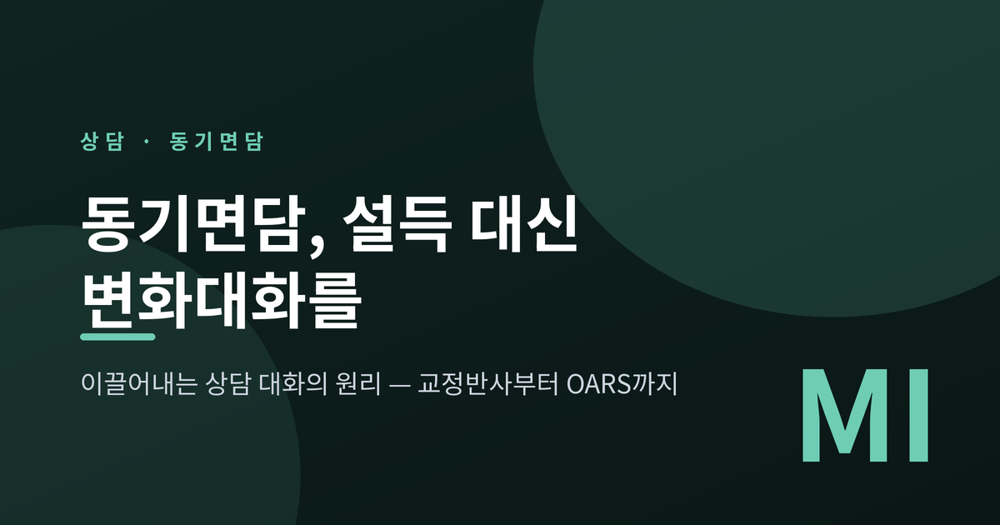
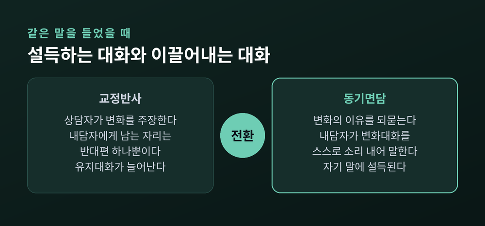
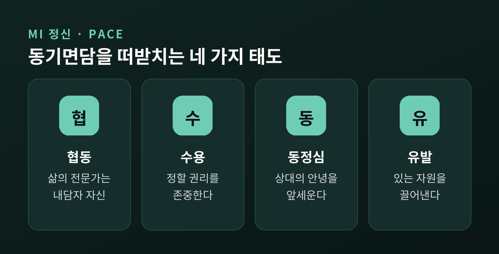
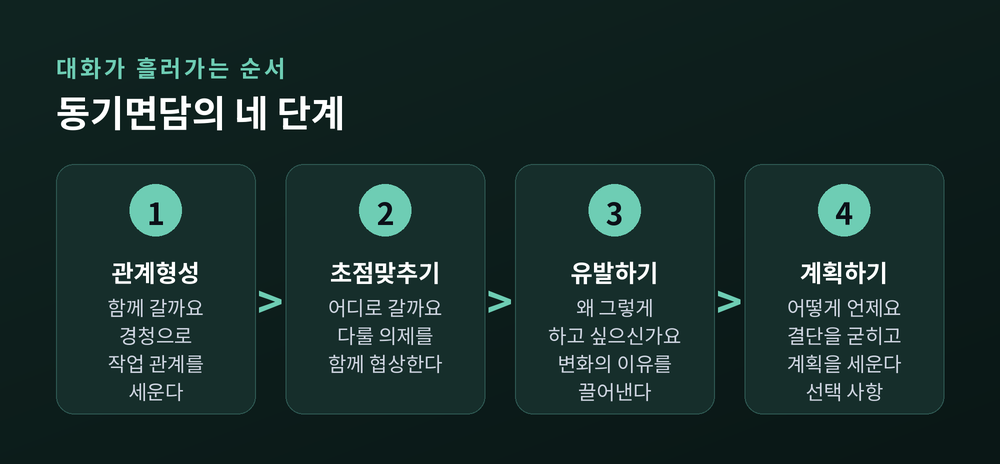
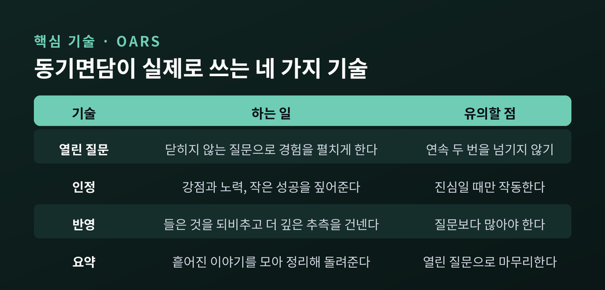
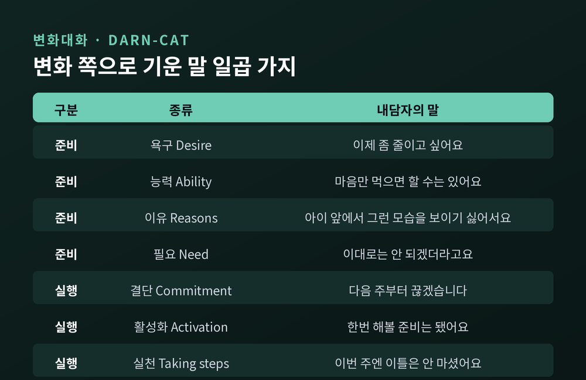
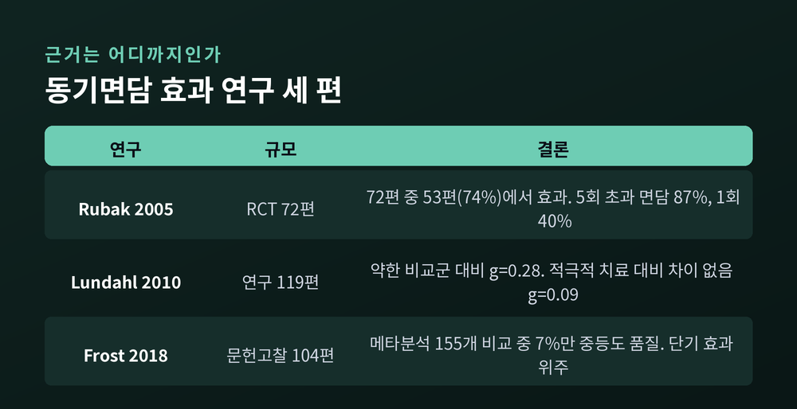

교정반사와 양가감정에서 MI 정신 4요소, 4단계 프로세스, OARS까지

이번 글에서는 동기면담(Motivational Interviewing)이라는 상담 대화 방식을 정리해 보겠습니다. 바꾸라고 설득할수록 상대가 더 완강해지는 일이 왜 생기는지, 상담 현장에서는 그 대신 무엇을 하는지를 다룹니다. 이론의 뼈대부터 실제 대화의 결, 그리고 이 방법이 가진 한계까지 함께 보겠습니다.
먼저 핵심만 세 줄로 정리합니다.
누군가 힘들어하는 모습을 보면 곧바로 답을 주고 싶어집니다. 술을 줄이라고, 담배를 끊으라고, 그 관계를 정리하라고 말하고 싶어집니다. 동기면담에서는 이 충동에 이름을 붙였습니다. 교정반사(righting reflex)입니다. 2023년 4판에서는 이를 더 쉬운 말인 '고치려는 반사(fixing reflex)'로 바꿔 부릅니다.
문제는 이 선한 충동이 만들어내는 결과입니다. 미국 약물남용·정신건강서비스국(SAMHSA)의 TIP 35 지침은 이렇게 설명합니다. 내담자가 상담자로부터 담배를 끊어야 하는 이유와 방법, 그것이 얼마나 중요한지를 듣게 되면, 내담자는 계속 피워야 할 이유를 스스로 주장하게 되는 경향이 생긴다고요.
대화의 역할이 갈리는 순간입니다. 상담자가 변화를 주장하는 쪽에 서면, 남는 자리는 하나뿐입니다. 내담자는 변화하지 않아야 할 이유를 찾아 말하게 됩니다. 그리고 사람은 자기가 소리 내어 말한 쪽을 더 믿게 됩니다.

이 접근은 변화 앞에서 마음이 반반으로 갈리는 상태를 정상으로 봅니다. 이것이 양가감정(ambivalence)입니다.
해로운 줄 알면서도 놓지 못하는 사람의 마음은 둘로 나뉘어 있습니다. 한쪽은 해로움을 알고 멈추고 싶어 하고, 다른 한쪽은 그 행동이 주는 것을 알기에 계속하고 싶어 합니다. SAMHSA 지침은 삶의 근본적인 변화 앞에서 두 마음이 드는 것은 자연스러운 일이며, 양가감정이 곧 변화 방법에 대한 지식이나 기술의 부족을 뜻하지는 않는다고 못 박습니다.
예전의 상담은 이 지점을 '저항'으로 읽었습니다. 지금은 다르게 봅니다. 동기면담은 저항이라는 말을 거의 쓰지 않고, 대신 현 상태를 유지하려는 쪽의 말인 유지대화(sustain talk)와 상담 관계 자체가 삐걱대는 불화(discord)로 나누어 부릅니다. 저항은 내담자의 성격이 아니라, 그 순간 대화가 만들어낸 결과라는 관점입니다.
국제 동기면담 훈련가 네트워크(MINT)는 이 방식이 특히 힘을 발휘하는 상황을 네 가지로 꼽습니다. 양가감정이 높을 때, 해낼 수 있을지 자신감이 낮을 때, 변화하고 싶은지 자체가 불확실할 때, 그리고 변화의 이점이 뚜렷하지 않을 때입니다.
이 접근은 1983년 윌리엄 밀러(William R. Miller)가 학술지에 발표한 「문제 음주자를 위한 동기면담」에서 시작됐습니다. 노르웨이의 알코올 치료 현장에서 일하던 그가, 자신의 공감적 접근을 두고 동료 임상가들이 던진 질문에 답하는 과정에서 원리를 정리하게 된 것이 출발점이었습니다.
뿌리는 칼 로저스의 인간중심 상담에 있습니다. 무조건적 존중과 정확한 공감에 기반한 반영적 경청이 그대로 이어집니다. 다만 한 가지가 다릅니다. 로저스의 비지시적 접근과 달리, 동기면담에는 방향성이 있습니다.
MINT는 이 위치를 정확하게 표현합니다. 이것은 잘 듣기만 하는 '따라가기'와 정보·조언을 주는 '지시하기' 사이에 있는 '안내하기(guiding)' 스타일이라고요.
밀러와 롤닉의 정의는 이렇습니다. "변화의 언어에 특별히 주의를 기울이는, 협동적이고 목표지향적인 의사소통 방식. 수용과 동정의 분위기 안에서 그 사람 자신의 변화 이유를 이끌어내고 탐색함으로써, 특정 목표에 대한 동기와 결단을 강화하도록 설계된 것."
동기면담은 기법 이전에 태도입니다. MINT는 이를 '함께 있는 방식(a way of being)'이라 부르며 네 요소로 정리합니다. 머리글자를 따 PACE라고 합니다.
협동(Partnership) — 상담자는 사람이 변화하도록 돕는 일의 전문가이고, 내담자는 자기 삶의 전문가입니다. 상담자가 부드럽게 영향을 주되, 대화를 이끄는 사람은 내담자입니다.
수용(Acceptance) — 판단을 멈추고 상대의 관점을 이해하려 애씁니다. 강점을 짚어주고, 무엇보다 변화할지 말지를 스스로 결정할 권리를 존중합니다. SAMHSA는 수용을 절대적 가치, 정확한 공감, 자율성 지지, 인정의 네 갈래로 나눕니다.
동정심(Compassion) — 내담자의 안녕을 사심 없이 앞세웁니다.
유발(Evocation) — 사람 안에는 이미 변화에 필요한 자원과 지혜가 있다고 봅니다. 상담자가 없는 것을 넣어주는 것이 아니라, 있는 것을 끌어내는 일입니다.
한 가지 덧붙일 것이 있습니다. 밀러와 롤닉은 2023년 4판에서 네 번째 요소인 '유발'을 '역량강화(Empowerment)'로 넓혔습니다. 그 사람 자신의 강점과 자율성을 더 강조하기 위해서라고 밝혔습니다. 나머지 세 요소는 그대로입니다.

이 방법은 대화의 흐름을 네 단계로 봅니다. MINT는 이 네 가지를 각각 한 문장의 질문으로 요약합니다.
단계는 직선이 아닙니다. 언제든 앞 단계로 돌아갈 수 있습니다. 다만 순서에 관해 한 가지 원칙은 지켜집니다. 초점맞추기는 반드시 유발하기보다 앞에 온다는 것입니다. 어디로 갈지 합의하지 않은 채 왜 가야 하는지를 묻는 것은 순서가 뒤집힌 대화입니다.
계획하기는 선택 사항이라는 점도 기억할 만합니다. 모든 대화가 계획으로 끝날 필요는 없습니다. 준비되지 않은 사람에게 계획을 꺼내면, 그 계획은 상담자의 것이 됩니다.
참고로 4판에서는 '프로세스(과정)'라는 말을 더 쉬운 '과제(tasks)'로 바꿨습니다. 내용은 같습니다.

정신과 단계를 실제 문장으로 옮기는 도구가 OARS입니다. 네 가지 기술의 머리글자입니다.
| 기술 | 하는 일 |
|---|---|
| O 열린 질문 | 예/아니오로 닫히지 않는 질문으로 상대의 경험을 펼치게 합니다. 연속으로 두 번을 넘기지 않는 것이 권장됩니다. |
| A 인정 | 강점과 노력, 작은 성공을 짚어 자신감을 키웁니다. 진심이어야 작동합니다. |
| R 반영 | 들은 것을 되비춰 줍니다. 동기면담의 기초 기술이자 공감을 표현하는 방식입니다. |
| S 요약 | 흩어진 이야기를 모아 정리해 돌려주고, 열린 질문으로 마무리합니다. |
이 중 무게가 가장 무거운 것은 반영입니다. 반영은 단순히 말을 따라 하는 것이 아닙니다. 상대가 말한 것을 다르게 표현하거나, 아직 말하지 않은 것에 대한 더 깊은 추측을 조심스럽게 건네는 일입니다.
예를 들어 이런 말을 들었다고 해보겠습니다. "요즘 계속 늦게까지 마셔요. 아침에 아이 등교시킬 때 정신이 없고요."
같은 말을 들었는데 돌려주는 깊이가 다릅니다. 그리고 이 깊이가 다음에 나올 말을 바꿉니다.
실무에서 쓰이는 지표도 있습니다. 동기면담 충실도 척도(MITI)는 반영과 질문의 비율이 최소 1대 1 이상, 복합 반영이 전체 반영의 40% 이상일 때 기본 수준에 도달한 것으로 봅니다. SAMHSA 역시 숙련된 상담자는 질문보다 반영을 더 많이 한다고 정리합니다.
반대로 피해야 할 것도 분명합니다. 조언을 너무 많이 주는 것, 반영 없이 질문만 쏟아내는 것, 내담자의 긍정적 행동을 인정하지 않고 지나치는 것입니다.

동기면담의 승부처는 결국 하나입니다. 내담자의 말 중에서 변화 쪽으로 기운 문장을 알아채고, 그 문장이 더 자라도록 하는 것입니다. 이것이 변화대화(change talk)입니다.
변화대화는 일곱 가지로 나뉩니다. 머리글자를 따 DARN-CAT이라 부릅니다. 앞의 넷은 준비 단계의 말이고, 뒤의 셋은 실제 움직임에 가까운 말입니다.
| 구분 | 종류 | 내담자의 말 |
|---|---|---|
| 준비 | D 욕구 | "이제 좀 줄이고 싶어요" |
| 준비 | A 능력 | "마음만 먹으면 할 수는 있어요" |
| 준비 | R 이유 | "아이 앞에서 그런 모습을 보이기 싫어서요" |
| 준비 | N 필요 | "이대로는 안 되겠더라고요" |
| 실행 | C 결단 | "다음 주부터 끊겠습니다" |
| 실행 | A 활성화 | "한번 해볼 준비는 됐어요" |
| 실행 | T 실천 | "이번 주엔 이틀은 안 마셨어요" |
이 말들을 어떻게 끌어낼까요. TIP 35는 몇 가지 방법을 제시합니다. 더 자세히 말해 달라고 청하기, 구체적인 예를 물어보기, 그런 어려움이 없던 시절을 함께 돌아보기, 이대로 5년이 지나면 어떨지 내다보기, 자신감을 0에서 10까지의 숫자로 물어보기, 그리고 그 사람이 소중히 여기는 가치를 탐색하기입니다.
다만 전제가 있습니다. 이 전략들은 OARS를 통해 이미 신뢰가 쌓였을 때 가장 잘 작동합니다. 관계 없이 기법만 쓰면, 그것은 정교해진 설득일 뿐입니다.
4판은 이 작업을 두 동사로 표현합니다. 변화대화는 북돋우고, 유지대화는 부드럽게 하는 것입니다.

이해를 돕기 위해 일반화된 가상의 장면을 하나 들겠습니다. 특정 개인의 사례가 아니라, 흔히 볼 수 있는 상황을 재구성한 것입니다.
늦은 밤 음주가 잦아진 직장인이 상담실을 찾았다고 해보겠습니다.
먼저 교정반사가 앞선 대화입니다.
내담자: "요즘 매일 마시긴 하는데, 그렇다고 큰 문제가 있는 건 아니에요."
상담자: "매일 드시는 건 위험합니다. 간 수치도 확인해 보셔야 하고요. 지금부터라도 주 2회로 줄이시는 게 좋겠습니다."
내담자: "다들 그 정도는 마셔요. 저는 다음 날 출근도 잘하고요."
상담자가 변화 쪽에 서자, 내담자는 자연스럽게 반대쪽에 섰습니다. 이제 유지대화를 소리 내어 연습하는 중입니다.
같은 장면을 동기면담으로 바꿔보겠습니다.
내담자: "요즘 매일 마시긴 하는데, 그렇다고 큰 문제가 있는 건 아니에요."
상담자: "매일 드시지만, 아직 크게 걸리는 부분은 없다고 느끼시는군요." (반영)
내담자: "네. 뭐, 아침에 좀 무겁긴 하죠."
상담자: "아침이 무겁다는 건 어떤 느낌인가요?" (열린 질문)
내담자: "아이 등교 준비를 해주는데, 제가 좀 짜증을 내게 되더라고요. 그게 좀 그래요."
상담자: "아이 앞에서 짜증 내는 모습이 마음에 걸리시는군요." (반영 — 변화대화의 '이유'를 되비춤)
내담자: "그건 좀 아니다 싶긴 해요. 줄여야 하나 싶기도 하고요."
두 번째 대화에서 "줄여야 하나"라는 말은 상담자가 아니라 내담자의 입에서 나왔습니다. 상담자가 한 일은 설득이 아니라, 이미 그 사람 안에 있던 문장을 밖으로 꺼내도록 자리를 내준 것뿐입니다.
여기서는 솔직해질 필요가 있습니다. 동기면담은 연구가 많이 쌓인 접근이지만, 결과는 한 방향으로만 읽히지 않습니다.
| 연구 | 규모 | 결과 |
|---|---|---|
| Rubak 외 (2005) | RCT 72편 | 72편 중 53편(74%)에서 효과. 5회 초과 면담은 87%, 1회 면담은 40%. |
| Lundahl 외 (2010) | 연구 119편 | 약한 비교군 대비 작은 효과(g=0.28). 다른 적극적 치료와 비교하면 차이 없음(g=0.09). |
| Frost 외 (2018) | 문헌고찰 104편 | 메타분석 비교 155개 중 11개(7%)만 중등도 품질. 이득은 주로 6개월 미만 단기. |
Rubak 연구에서 눈에 띄는 것은 조건별 차이입니다. 60분 면담은 81%, 20분 미만은 64%였습니다. 추적 기간 12개월 이상은 81%, 3개월은 36%였습니다. 반면 하루 흡연량과 당화혈색소에서는 유의한 효과가 나오지 않았습니다.
Lundahl의 메타분석은 더 냉정합니다. 아무것도 하지 않는 것보다는 분명히 낫지만, 다른 근거 기반 치료보다 더 낫다고 말하기는 어렵다는 결론입니다.
Frost의 리뷰는 근거의 품질 자체를 문제 삼습니다. 155개 비교 중 128개가 낮음 또는 매우 낮음 등급이었습니다. 중등도 품질 근거가 확인된 영역은 폭음 감소, 음주량 감소, 의존이 있는 사람의 물질사용 감소, 신체활동 증가 정도였습니다.
한계는 더 있습니다. 2023년 한 체계적 문헌고찰은 효과의 예측 구간이 −0.16에서 0.54까지 넓게 벌어진다고 보고했습니다. 일부 집단에서는 도움이 되지 않았을 가능성이 있다는 뜻입니다. 같은 연구는 개입의 충실도 보고가 전반적으로 부실하다는 점도 지적합니다. 상담자마다 숙련도 편차가 크고, 어느 정도 숙련해야 성과가 개선되는지조차 아직 명확하지 않습니다.
그럼에도 남는 것이 있습니다. SAMHSA는 물질사용 영역에서 동기면담이 알코올·담배·약물 사용 감소에 도움이 된다는 결과가 일관되게 나타났다고 정리합니다. 치료 유지율과 단주 기간이 개선되고, 짧은 개입으로도 효과를 낼 수 있다는 점도 함께 언급합니다.
정리하면 이렇습니다. 동기면담은 기적을 만드는 도구가 아니라, 대화가 어긋나는 것을 막아주는 도구에 가깝습니다.

동기면담은 원래 중독 치료에서 출발했지만, 지금은 의료·교정·복지·교육 현장까지 넓게 쓰입니다. 4판의 부제가 '사람들이 변화하고 성장하도록 돕기'로 바뀐 것도, 교사와 코치와 관리자까지 사용자층이 넓어졌다는 판단에서였습니다.
다만 MINT는 오해도 분명히 짚습니다. 동기면담은 사람을 변화시키는 방법이 아니고, 대화에 얹는 기법 세트도 아닙니다. 임상가가 내담자를 동등한 파트너로 대하고, 요청받지 않은 조언과 직면과 훈계를 삼갈 것을 요구합니다. 시간과 연습, 자기 인식과 절제가 필요하다고 명시합니다.
집단 형식에 대한 근거가 아직 부족하다는 점, 문화적 맥락에 맞게 조정이 필요하다는 점도 알려진 한계입니다. 개념적 안정성과 이론적 토대가 약하다는 학계의 비판도 존재합니다.
그러니 이렇게 정리하면 좋겠습니다. 동기면담은 완성된 정답이 아니라, 덜 해치는 대화를 위한 훈련된 태도입니다.
정리하면 이렇습니다.
바꾸라고 말하는 대신 왜 바꾸고 싶은지를 묻는 것. 답을 건네는 대신 답이 나올 자리를 비워두는 것. 동기면담이 하는 일은 그 두 가지에서 거의 벗어나지 않습니다.
"변화의 이유는 상대의 입에서 나올 때 비로소 힘을 얻습니다."
다만 한 가지는 꼭 덧붙이고 싶습니다. 이 글은 동기면담이라는 접근을 소개한 것이지, 스스로를 상담할 수 있게 해주는 안내서가 아닙니다. 중독이나 우울, 관계의 어려움처럼 지속되는 어려움을 겪고 계신다면 전문 상담사나 정신건강의학과 등 전문가와 상의하시길 권합니다. 혼자 견디는 것보다 훨씬 나은 선택입니다.
누군가를 정말 바꾸고 싶다면 무엇부터 해야 하느냐고 물으신다면, 저는 이렇게 답하겠습니다. 먼저 말을 줄이고, 그 사람이 이미 알고 있는 것을 물어보시라고요.